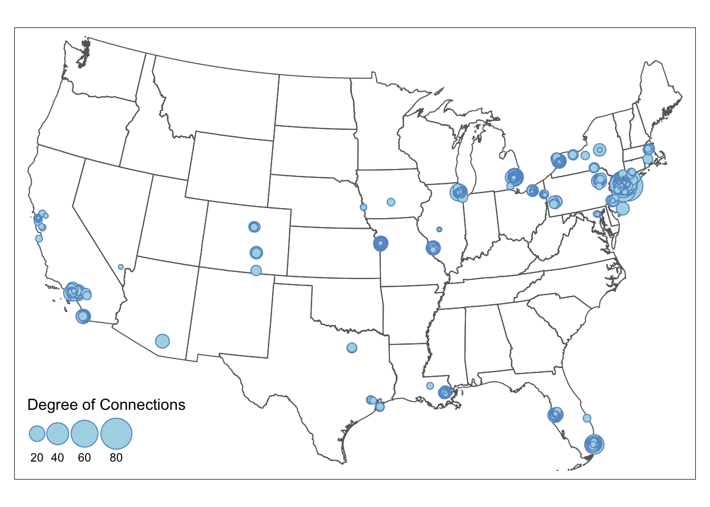

Chapter 3 Visualizing Nodes
In this chapter, we continue to use the American Mafia data introduced in Chapter 2. They can be loaded from the SSNtools package directly.
The node table MafiaNodes contains:
NODE: Name of the Mafia member (capitalized)Family: Mafia family the member belongs toNY: Whether the member is in New York CityLonX: Longitude of the location of the memberLatY: Latitude of the location of the memberNiceLabel: Name of the Mafia member (lower case)
The edge list MafiaEdges contains pairs of undirected connections:
Source: the name of a memberTarget: the name of a different member
This chapter covers the following topics:
- How to convert node coordinates into point geometry
- How to visualize nodes with constant color and size
- How to visualize nodes with varying node size by attributes
- How to visualize nodes with varying color by attributes
- How to visualize nodes with varying node size and color with a combined legend
You will be able to find a copy of all the codes at the bottom of the page.


Before proceeding to the codes, please load the following packages:
library(sf)
library(tidyverse)
library(tmap)
library(igraph)
library(RColorBrewer)
library(tigris)
#install.packages("devtools") #to download R package on GitHub
#devtools::install_github("friendlycities-gatech/SSNtools")
library(SSNtools)3.1 Convert Coordinates to Points
The data for the nodes may come in two common format. One is the node table that we mentioned in Chapter 2 (REF), and the other is spatial object, in which nodes are already point geometry. The node table often stores the spatial information of the node as two columns: latitude and longitude. Spatial object contains spatial information of the node in the geometry column. It also includes projection coordinates system of the object. Unless you are working with ggplot2, most other visualization packages require nodes to be spatial objects for mapping.
You can convert a node table with coordinates into a spatial object with st_as_sf function in sf package. Spatial information is stored in the LonX and LatY column in MafiaNodes node table. Therefore, when we convert it to sf spatial object, we need to set the coordinates crs to be WGS84 (4326).
#MafiaNodes is a built-in dataset in SSNtools R package
MafiaSpatial = MafiaNodes %>%
st_as_sf(coords=c("LonX", "LatY"), crs = 4326)
head(MafiaSpatial, 3)## Simple feature collection with 3 features and 4 fields
## Geometry type: POINT
## Dimension: XY
## Bounding box: xmin: -117.291 ymin: 34.1493 xmax: -77.5774 ymax: 43.1356
## Geodetic CRS: WGS 84
## NODE Family NY NiceLabel geometry
## 1 VALENTI-COSTENZA Bonanno 1 Costenza Valenti POINT (-77.6064 43.1349)
## 2 VALENTI-FRANK Bonanno 1 Frank Valenti POINT (-77.5774 43.1356)
## 3 DIPOLLITO-JOSEPH Los_Angeles 0 Joseph Dipollito POINT (-117.291 34.1493)3.2 Visualize Nodes
First step, we download the U.S. state shapefile through tigris package as the background for visualization and transform the shapefile and the dataframe data to the appropriate crs (coordinate reference system).
The coordinate information can be stored in other projection system other than the commonly used WGS84. Users need to find out what crs is used before transforming the data to another system. Only when crs are the same for two or more shapefiles (or geometry) can we overlay them correctly on each other. Since we are mapping the data on U.S. mainland, we exclude U.S. territories and further transform the node table into sf spatial objects with North America Equidistant Conic projection (crs=“ESRI:102010”).
#Convert coordinate system
MafiaSpatial = MafiaSpatial %>%
st_transform(MafiaSpatioal, crs="ESRI:102010")
#states is a function in tigris to download U.S. state boundary shapefile
us_states = states(cb=TRUE, progress_bar = FALSE) %>%
filter(!STUSPS %in% c('PR','AS', 'AK', 'GU','MP','VI', 'HI')) %>%
st_transform(crs="ESRI:102010")Second step: visualize the nodes on the US state map!
tmap_mode('plot') # set tmap plotting mode to static map
tm_shape(us_states) +
tm_polygons() + #draw U.S. state shapefile first as polygons
tm_shape(MafiaSpatial) +
tm_symbols() #overlay nodes as points
3.3 Visualize Nodes by Node Color
The map above only shows the locations of Mafia members. We want to visualize the influence of these members and find out where influential people reside. We load the edge file MafiaEdges and calculate the degree of each node.
To vary the node color by degree, we simply set the col argument to the variable degree that should vary by color. Different from node size, style argument can modulate the breaks for node color in different styles, such as quantile breaks, equal interval breaks, head/tail breaks and so on. The number of class is defaulted to five. To define the color, you can either pass a R palette (e.g., YlGnBu) or a vector of color to palette argument. More details can be found in tmap document.
#MafiaEdges is a built-in dataset in SSNtools
#Construct a network and calculate the degree for each node.
g = graph_from_data_frame(MafiaEdges, directed = FALSE, vertices=MafiaSpatial)
MafiaSpatial$degree = degree(g)
tmap_mode('plot')
tm_shape(us_states) +
tm_polygons(alpha=0) +
tm_shape(MafiaSpatial) +
tm_symbols(
size=1, #constant node size
col='degree', palette = 'YlGnBu', #define which numeric column to vary by color and the color palette
style='quantile', n = 4, #define the color breaks using quantile, and set the number of classes to 4.
alpha=0.5, border.col='black', border.alpha = 0.5,
title.col=c('Degree of Connections'))
3.4 Visualize Nodes by Node Size
To visualize the node size by the connection degree, we have to set the node size varies by degree in tm_symbols. The default breaks for node size is interval breaks. You can adjust the breaks for node size in the legend directly through sizes.legend argument in tm_symbols.
# Visualize
tmap_mode('plot')
tm_shape(us_states) +
tm_polygons(alpha=0) + #turn the background color of the polygons to transparent
tm_shape(MafiaSpatial) +
tm_symbols(size="degree", scale=2, #scale up the node size
col='lightblue', border.col='#6698CC',
title.size=c('Degree of Connections'))
If you want node size to follow a particular break, then nodes need to be grouped into size brackets. Differnt from color whose breaks can be adjusted in style argument (e.g., style=‘quantile’), changing node size is not straightforward. This example shows how to size nodes in quantile breaks. We first check the quantile breakdown of the degree in the data as the reference. Then, we create a new degree_brackets column that group nodes with different degree to ordered categories. Lastly, we set the size argument in tm_symbols to the new degree_brackets column, which changes the size of the nodes in the map. We adjust the legend breaks using sizes.legend. sizes.legend only changes the size of the nodes in the legend but not for nodes in the map (use scale for the latter). More details can be found in tmap document.
The final node size in the map = relative node size defined in degree_brackets / size.max * scale
Numbers in the degree_brackets column only define the relative size difference between the nodes. size.max and scale are often defaulted to be 1, therefore makes it easy for people to directly define node size in the degree_brackets column. In that case, the node with designated with the highest size value will have the node size of 1. In our example, node size of 1 is visually too small in the map, so we scale up the node size by 1.5. Thus, the actual node sizes for the four brackets are c(0.1, 0.3, 0.5, 1)/1*1.5 = c(0.15, 0.45, 0.75, 1.5).
quantile(MafiaSpatial$degree)## 0% 25% 50% 75% 100%
## 1 4 6 10 77# Create a new 'degree_bracket' column that contains the node size for each group of nodes.
MafiaSpatial = MafiaSpatial %>%
mutate(degree_brackets = case_when(
degree >= 2 & degree < 8 ~ 0.1,
degree >= 8 & degree < 12 ~ 0.3,
degree >= 12 & degree < 20 ~ 0.5,
degree >= 20 & degree <= 154 ~ 1
))
# Visualize
tmap_mode('plot')
tm_shape(us_states) +
tm_polygons(alpha=0) +
tm_shape(MafiaSpatial) +
tm_symbols(
size="degree_brackets", size.max = 1, scale = 1.5,
sizes.legend = c(0.1, 0.3, 0.5, 1)/1*1.5,
sizes.legend.labels = c('2-8','8-12','12-20','20-154'),
col='lightblue', border.col='#6698CC', #blue grey
alpha=0.5, border.alpha = 0.5,
title.size=c('Degree of Connections'))
3.5 Visualize Nodes by Size and Color
The automatic legend in tmap now cannot support color and size legend in one. To combine the color and size legend, we have to manually create a legend with the color and size attributes from the color and size legends, using tm_add_legend. To replicate the color, we use RColorBrewer package to generate colors for a given number, which is the default way that tmap assigns colors. To replicate the size, we pass in the square root of the actual node size. Setting node size in tm_add_legend is tricky, which is the square roots of the actual node size (see here for detail explanation). Remember: The final node size in the map = relative node size defined in degree_brackets / size.max * scale. Lastly, we set the legend.col.show =FALSE and legend.size.show =FALSE to hide the default legends.
tmap_mode('plot')
map = tm_shape(us_states) +
tm_polygons(alpha=0) +
tm_shape(MafiaSpatial) +
tm_symbols(
#arguments that define point sizes
size="degree_brackets", size.max = 1, scale = 1.5,
legend.size.show = FALSE,
#arguments that define point colors
col='degree_brackets', palette = 'YlGnBu', n = 4,
alpha=0.5,
border.col='black', border.alpha = 0.5,
legend.col.show = FALSE) +
tm_add_legend(type=c("symbol"),
col = c("#FFFFCC", "#A1DAB4", "#41B6C4", "#225EA8"), #copy from RColorBrewer: brewer.pal(4, "YlGnBu")
alpha = 0.5, is.portrait = FALSE, # legend becomes horizontal
# size defined here should be the square root of the normalized point size * scale.
# The square root is taken since the area is proportional to the data, not the radius.
size = (c(0.1,0.3,0.5,1)/1)^0.5*1.5,
labels = c('2-8','8-12','12-20','20-154'), #break labels
border.col = 'black', border.alpha = 0.2,
title = c("Degree of Connections"))
map
To export the tmap object into a local folder, you can add:
tmap_save(map, filename='YOUR_LOCAL_FOLDER_PATH/map.png')The full codes for creating the map above is in the following:
library(readr)
library(igraph)
library(tmap)
library(sf)
library(tidyverse)
library(RColorBrewer)
library(SSNtools)
#read data
MafiaSpatial = MafiaNodes %>%
st_as_sf(coords=c("LonX", "LatY"), crs = 4326)
us_states = states(cb=TRUE, progress_bar=FALSE) %>%
filter(!STUSPS %in% c('PR','AS', 'AK', 'GU','MP','VI', 'HI')) %>%
st_transform(crs="ESRI:102010")
# Construct a network and calculate the degree for each node.
g = graph_from_data_frame(MafiaEdges, directed = FALSE, vertices=MafiaSpatial)
MafiaSpatial$degree = degree(g)
# Create a new column that assign point size to points with varying degree.
MafiaSpatial = MafiaSpatial %>%
mutate(degree_brackets = case_when(
degree >= quantile(MafiaSpatial$degree)[1] & degree < quantile(MafiaSpatial$degree)[2] ~ 0.1,
degree >= quantile(MafiaSpatial$degree)[2] & degree < quantile(MafiaSpatial$degree)[3] ~ 0.3,
degree >= quantile(MafiaSpatial$degree)[3] & degree < quantile(MafiaSpatial$degree)[4] ~ 0.5,
degree >= quantile(MafiaSpatial$degree)[4] & degree <= quantile(MafiaSpatial$degree)[5] ~ 1
))
# Visualize
tmap_mode('plot')
map = tm_shape(us_states) +
tm_polygons(alpha=0) +
tm_shape(MafiaSpatial) +
tm_symbols(
#arguments that define point sizes
size="degree_brackets", size.max = 1, scale = 1.5,
legend.size.show = FALSE,
#arguments that define point colors
col='degree', palette = 'YlGnBu', style='quantile', n = 4,
alpha=0.5,
border.col='black', border.alpha = 0.5,
legend.col.show = FALSE) +
tm_add_legend(type=c("symbol"),
col = brewer.pal(4, "YlGnBu"), #copy the color from R palette
alpha = 0.5, is.portrait = FALSE, # legend becomes horizontal
# size defined here should be the sqaure root of the normalized point size * scale.
# The square root is taken since the area is proportional to the data, not the radius.
size = (c(0.1,0.3,0.5,1)/1)^0.5*1.5,
labels = c('2-8','8-12','12-20','20-154'), #break labels
border.col = 'black', border.alpha = 0.2,
title = c("Degree of Connections"))
#tmap_save(map, filename='YOUR_LOCAL_FOLDER_PATH/map.png')